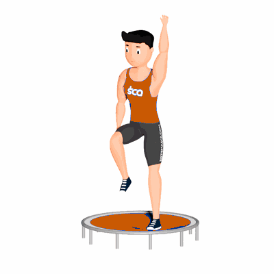

Elevação de Joelho e Braço no Jump

Auxilia na coordenação motora, fortalece os músculos inferiores e ajuda na perda de calorias.
Ficha Técnica
Tipo: Aeróbico
Grupo Muscular: Perna
Aparelho: Nenhum
Músculos: Nenhum
Como realizar
- Suba no Trampolim;
- Eleve um joelho ao peito e ao mesmo tempo eleve o braço contrário à perna flexionada;
- Enquanto a perna e o braço retorna a posição inicial, o outro joelho e braço deve subir;
- Repita os movimentos alternando os joelhos e braços.
 RC STORE
RC STORE